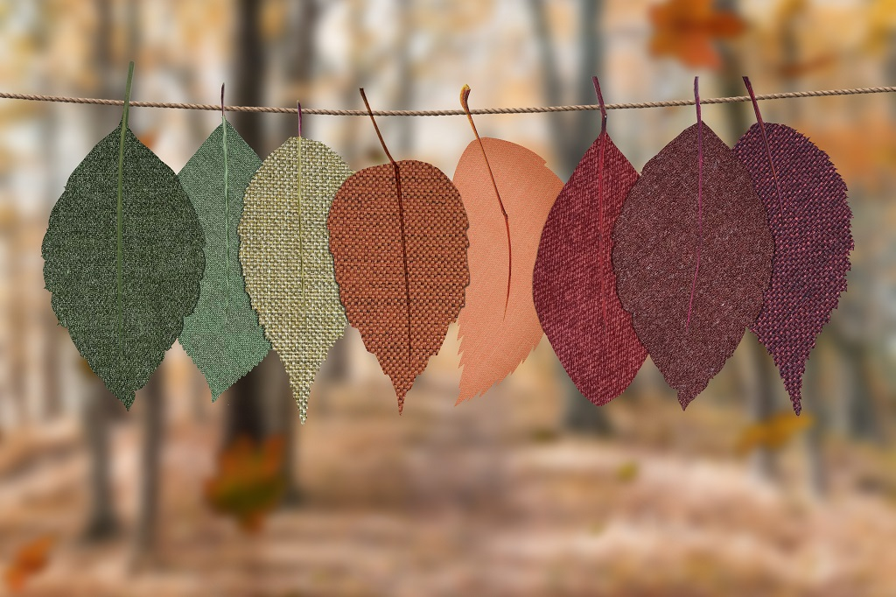
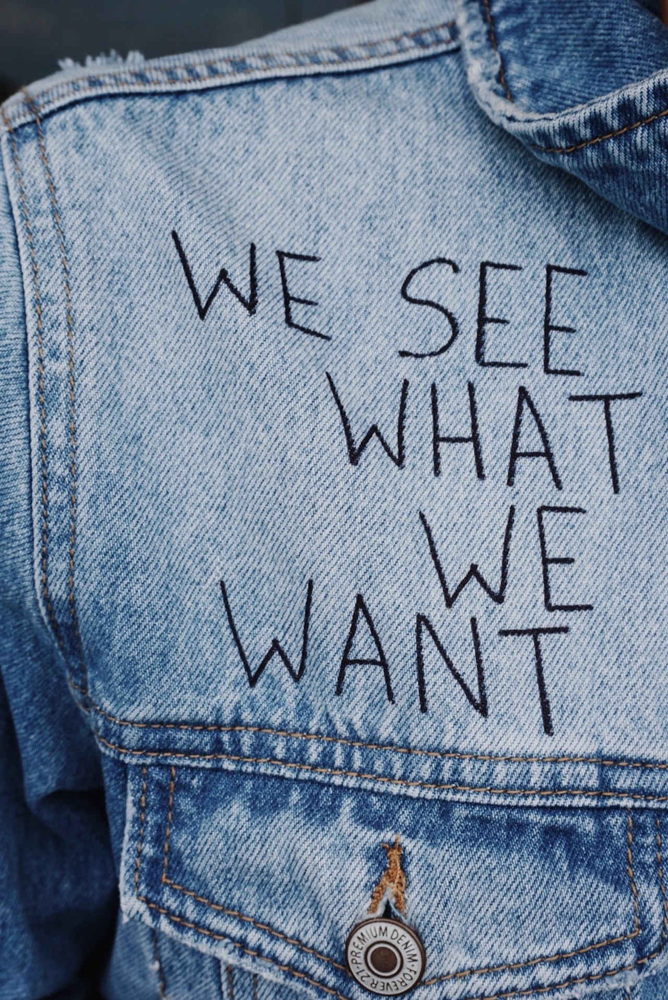

When did we start using Fabric
Fabric is processed by knitting or weaving, thus creating a cloth. This fabric is made into textile products. Knitting and weaving are two very interesting achievements of human race. .
Go somewhereHistory of Sewing
When people first started to wear clothing, they didn't sew it at all. They just wrapped leather or furs around themselves.

Future of Fabric
We've come a long way from the time we started using fabric for clothing. In the beginning we only use natural fabrics, from the fibres of flax, silk, cotton, and wool.